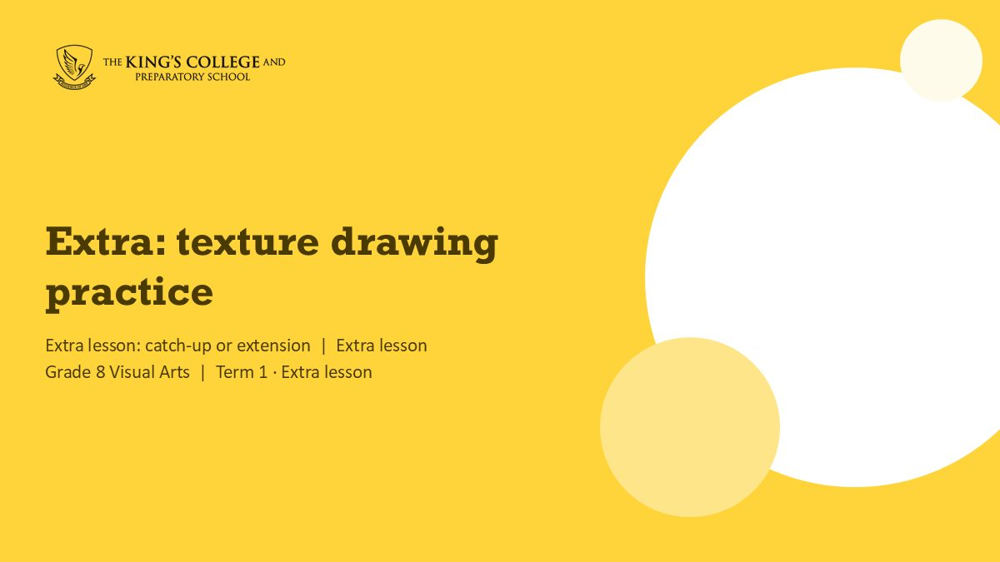

Term 1 · Extra lesson · Extra lesson: catch-up
Extra: texture drawing practice
Start here
Today I will
- Today I will finish any missing Term 1 work
- Today I will choose the right technique for a texture
- Today I will render a textured object from life
Think first
Pick up a pine cone (or a shell). Which shading technique from our texture squares would suit it best?
Words to know
- Texture
- How a surface feels, or looks as if it would feel: rough, smooth, bumpy, soft.
- Rendering
- Drawing a subject carefully with shading and detail so it looks real.
- Implied texture
- Texture that is drawn to look real, but you cannot feel it on the paper.
- Layering
- Building tone gradually with several light layers instead of one heavy one.
Slides

Videos
Notes
Catch-up, or draw a textured object (a pine cone, shell or crumpled paper) using the shading techniques.
Rendering a textured object
- Outline: Light basic shapes; check the proportions.
- Find the pattern: Look for the repeated parts (scales, ridges, folds).
- Shade each part: Each bump has its own light side and shadow.
- Layer: Build up the darks gradually; keep the highlights white.
Remember
Every bump has a light side and a shadow side.
Practical
You need: Pencils, eraser, blending stump, textured objects
Catch-up or textured-object study
- Check your journal: finish any missing Term 1 pages first.
- If you are up to date, choose a textured object.
- Draw it large, starting with light basic shapes.
- Shade it using at least two shading techniques.
- Label the techniques you used.
Test yourself
- What is rendering?
- Which technique did you use for your object?
- How do you keep a highlight bright?
Show answers
1. Drawing carefully with shading and detail so it looks real. 2. Own answer, with a reason. 3. Leave the paper white or lift tone with a putty eraser.
Finished early?
Zoom-in texture
Look closer and draw just one small part of your object, very large.
- Choose one scale, ridge or fold of your textured object.
- Draw it as large as your hand in your visual journal.
- Give it a light side, a mid-tone and a shadow side.
- Build the darks in layers and keep one highlight white.